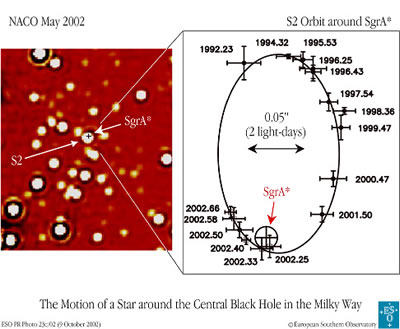

Credit: ESO
The Galactic centre is the point about which our Galaxy is rotating. It is located roughly 24,000 light years from the Solar System in the direction of the constellation Sagittarius, but cannot be seen in optical light due to heavy obscuration by interstellar dust grains along the line of sight. It is, however, observable at wavelengths that are not as affected by dust, in particular at infrared, radio and X-ray wavelengths.
Observations have revealed a complex radio source located very close to the Galactic centre. In particular, the compact radio and X-ray source Sagittarius A (SgrA*) has long been thought to be the location of a supermassive black hole at the centre of our Galaxy.
This idea has gained strength through recent infrared observations which were used to plot the orbits of stars located within light hours of the Galactic centre. It was found that these stars have very tight and fast Kelperian orbits, around an object of about 3 million solar masses located at the position of SgrA*. The orbital characteristics of these stars indicate that this mass cannot be due to compact clusters of neutron stars, stellar size black holes or one of the many other suggestions that have been put forward over the years. The most likely explanation is that a supermassive black hole, similar to those that have been observed in the centres of other galaxies, also lies at the centre of our own.